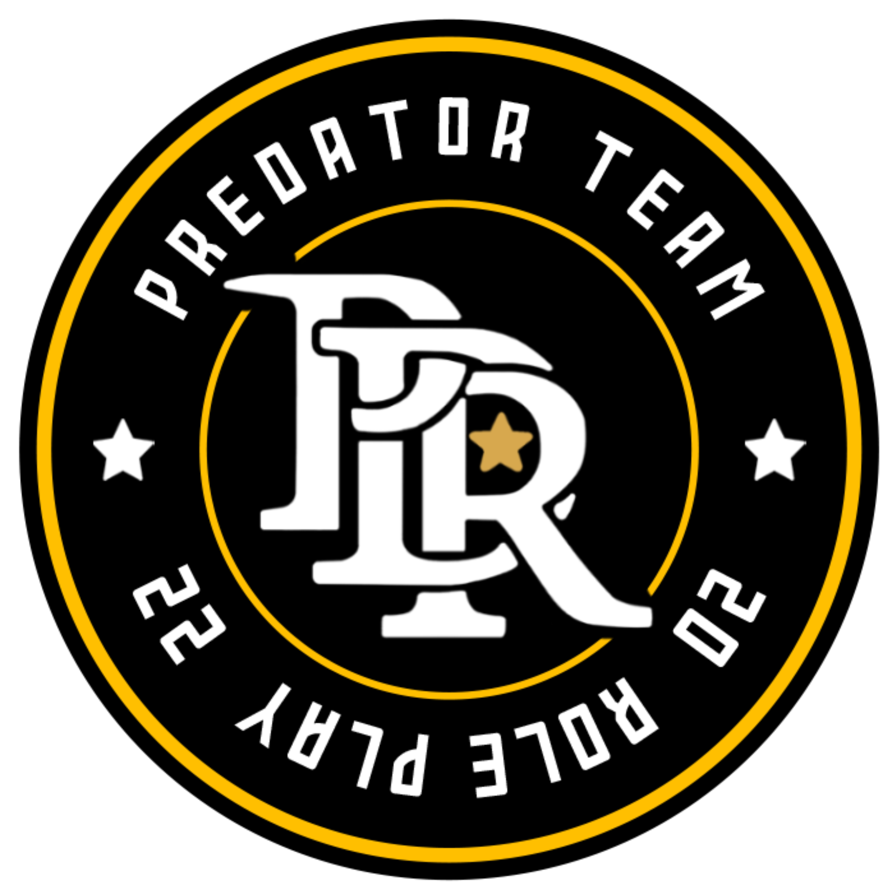
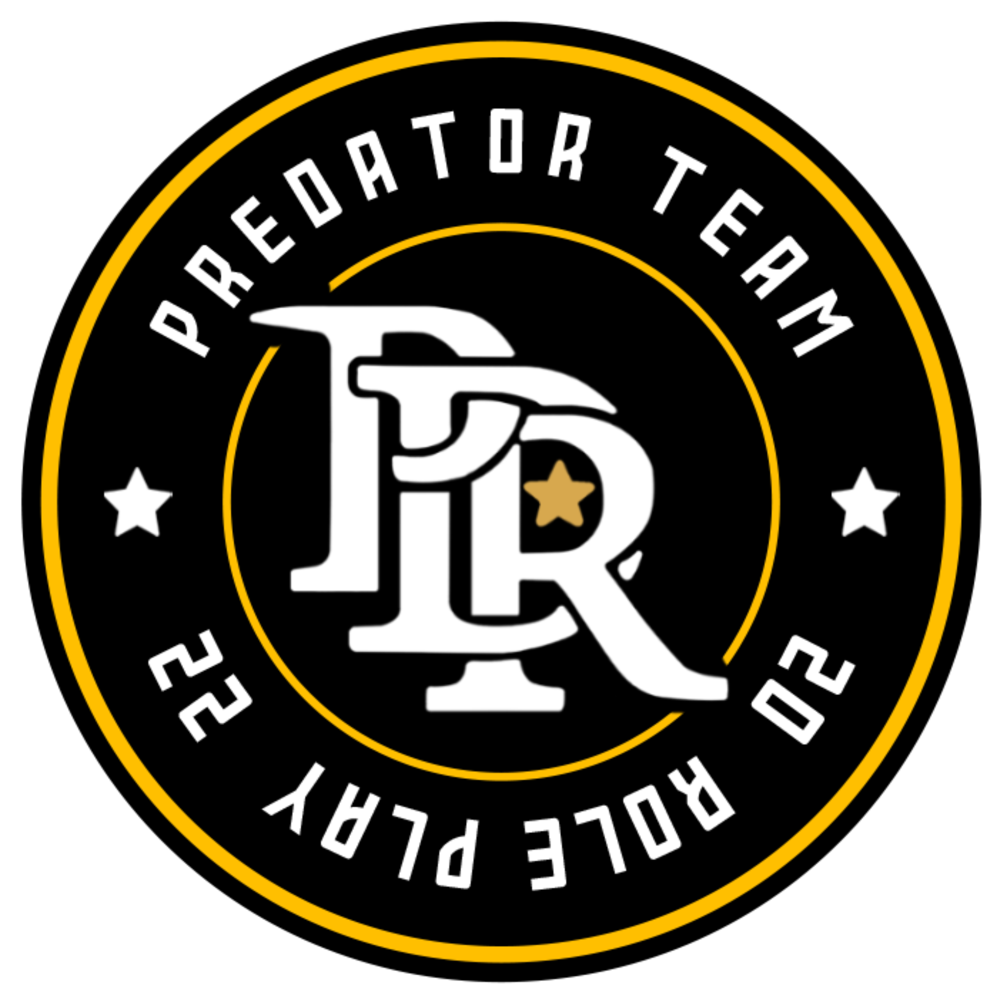
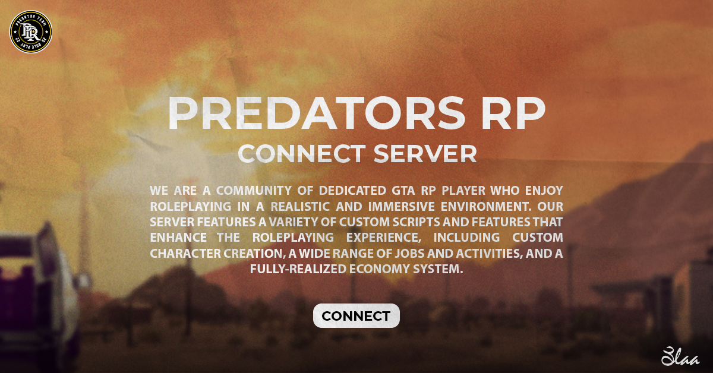

𝙋𝙍𝙀𝘿𝘼𝙏𝙊𝙍 𝙍𝙋 𝙈𝘼𝙍𝙊𝘾
 Grand Theft Auto Roleplay (GTA RP) Discord servers are online communities that enable players to engage in roleplaying within the game world of Grand Theft Auto Roleplay (GTA RP) Discord servers are online communities that enable players to engage in roleplaying within the game world of Grand Theft Auto. These servers provide an immersive experience where players can create their own unique characters, join a virtual world, and interact with other players. In a GTA RP Discord server, players are expected to roleplay as their characters and adhere to the server's rules and regulations. These rules are in place to maintain a realistic and enjoyable roleplaying experience for everyone involved. Players can engage in various activities within the virtual world, such as joining a gang, working a job, starting a business, or even becoming a police officer. Players are encouraged to create unique and compelling storylines that involve their characters and interact with other players' storylines. Discord servers for GTA RP typically offer a variety of channels for players to communicate and collaborate. These channels may include voice channels for in-game communication, text channels for roleplaying or out-of-character (OOC) discussions, and channels for reporting rule violations or requesting assistance. Overall, GTA RP Discord servers provide an excellent platform for players to engage in immersive roleplaying experiences, connect with like-minded individuals, and create their own unique stories within the game world of Grand Theft Auto
【ＨＯＷ　ＴＯ　ＪＯＩＮ　ＵＳ】

ğ™ƒğ˜¼ğ˜¿ğ˜¼ ğ™ƒğ™Šğ™’𘼠ğ™‡ğ™„ğ™‰ğ™†ğ™€ ğ˜¿ğ™”𙇠ğ˜¿ğ™„ğ™ğ˜¾ğ™Šğ™ğ˜¿ 𝙍𝙋 ğ™9ğ˜¿ğ™€ğ™ ğ™ğ™ƒğ™Šğ™ ğ™ğ™„𙃠ğ™’ğ™ƒğ™„ğ™ğ™‡ğ™„ğ™ğ™ ğ˜¿ğ™„ğ™”ğ˜¼ğ™‡ğ™† 𙊠ğ™‡ğ™€ğ™ ğ™ğ™ğ˜¼ğ™ğ™ ğ™‚ğ™”ğ™ğ™†ğ™€ğ™‡ğ™ğ™Š ğ˜½ğ™‡ğ˜½ğ˜¼9ğ™„
ğ™ğ™ğ™ğ™¨ ğ™ğ™¨
OUR DISCORD SERVER WELCOME BRHOTER
BA3D DIKRAYAT DYL PREDATORS.
 -- KABUL AHSAN GANG DAZET F SERVER LDRAJAT ANHOM KANO XADIN SAHRA KAMLA HAKMINHA LI D5AL LIHA KYB9A HADI JNABO LA YWA9FO 3LIH B TOYOTA O NESSAN THE BEST WALH
-- KABUL AHSAN GANG DAZET F SERVER LDRAJAT ANHOM KANO XADIN SAHRA KAMLA HAKMINHA LI D5AL LIHA KYB9A HADI JNABO LA YWA9FO 3LIH B TOYOTA O NESSAN THE BEST WALH